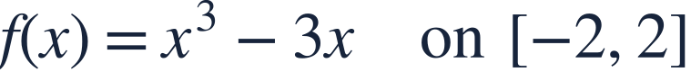
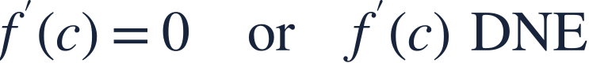
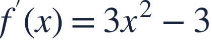

Extreme values and critical numbers
최대최소정리와 임계수

Existence of absolute extrema and the search for candidates are separate steps.
절대극값의 존재 확인과 후보점 찾기는 서로 다른 단계입니다.

Existence of absolute extrema and the search for candidates are separate steps.
절대극값의 존재 확인과 후보점 찾기는 서로 다른 단계입니다.
A continuous function on a closed bounded interval attains both absolute extrema.
닫히고 유계인 구간의 연속함수는 절대최댓값과 절대최솟값을 갖습니다.

Interior critical numbers have zero or undefined derivatives, but must belong to the function domain.
내부 임계수는 도함수가 0이거나 존재하지 않는 점이며 함수의 정의역에 속해야 합니다.

The polynomial has a derivative everywhere.
다항함수는 모든 실수에서 미분가능합니다.
These are the interior critical numbers.
이 두 점이 구간 내부의 임계수입니다.
Endpoints also enter the absolute-extrema comparison.
절대극값을 비교할 때는 끝점도 포함합니다.
A point where the original function is undefined is not its critical number.
원래 함수가 정의되지 않는 점은 그 함수의 임계수가 아닙니다.
Which interior number is critical, and why?
내부 임계수는 무엇이며 이유는 무엇인가요?